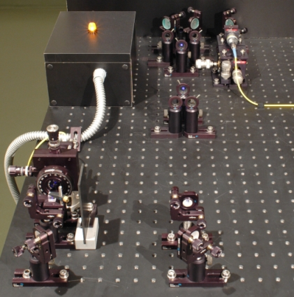

Existenz des Photons Kapitel 1:
Experiment mit Einzelereignissen für die Schule
Worin unterscheidet sich ein klassisches Objekt von einem Quantenobjekt? Ist das Photon ein Quantenobjekt? In diesem Kapitel wird die Existenz des Photons mit Hilfe eines Strahlteilerwürfels und Detektoren für einzelne Photonen bewiesen. Zur Vereinfachung wird das Experiment zunächst getrennt von der angekündigten Einzelphotonenquelle betrachtet.
Das Photon am Strahlteilerwürfel - getrennt von Quelle
Wenn helles Licht auf einen Strahlteiler geschickt wird, so teilt sich das Licht auf. Die Hälfte des Licht geht hindurch (transmittiert) und die andere Hälfte des Lichts wird am Strahlteiler abglenkt (reflektiert). Was macht jetzt aber eine einzelne Lichtportion am Strahlteiler (Abb. 1)? Was erwartest Du?

Abb. 1: Experiment zum Beweis der Existenz des Photons als Quantenobjekt
Überprüfe Deine Vermutung direkt am Experiment. Im Experiment wird über Lampen angezeigt, an welchem Detektor Licht nachgewiesen wurde. Führe das Experiment einige Male durch. Was lässt sich über einzelne Lichtportionen am Strahlteiler sagen? Zur richtigen Darstellung wird der neuste Flash-Player (Version 9 - Freeware) benötigt [Download].
Beobachtung und Erklärung:
Nach dem Strahlteiler registriert immer nur ein einzelner Detektor das Licht und niemals beide Detektoren zusammen. Das Licht teilt sich somit am Strahlteiler nicht auf. Es wird entweder reflektiert oder transmittiert. Welchen Weg das Licht nimmt ist nicht vorhersagbar (Quantenzufall). Licht kann man sich somit als Stoff vorstellen, der aus einzelnen unteilbaren Portionen besteht. Diese unteilbaren Portionen nennt man Quanten, die bei Licht als Photonen bezeichnet werden. Andere Beispiele für Quanten sind Elektronen: Die einzelnen unteilbaren Portionen sind die Elektronen, den Stoff kann man als Elektronium bezeichnen [Bro05].
Hinweis zur Trennung des Experimentes:
In Abbildung 2 ist die vom eigentlichen Experiment getrennte Einzelphotonenquelle zu sehen. Das eine Photon (linker Zweig) wird zum Triggern genutzt. Das andere Photon (rechter Zweig) wird in das gelbe Glasfaserkabel eingekoppelt und am eigentlichen Experiment (Abb. 1) wieder aus dem Glasfaserkabel ausgekoppelt. Erst nachdem der Trigger ein Photon registriert hat, werden die beiden Detektoren nach dem Strahlteiler freigeschaltet. Warum diese angekündigte Quelle unbedingt notwendig ist wird in im Abschnitt Grundlagen erläutert.

Abb. 2: Angekündigte Einzelphotonenquelle mit Trigger-Detektor
Linker Zweig: Trigger-Detektor, Rechter Zweig: Einkopplung in Glasfaserkabel
Das Photon am Strahlteilerwürfel - mit Quelle
Beim folgenden Experiment ist der Strahlteilerwürfel und die Photonenpaarquelle nicht getrennt (Abb. 3). Auch hier kann die Nichtteilbarkeit des Photons als Quantenobjekt am Strahlteilerwürfel direkt mit der entsprechenden Koinzidenz beobachtet werden.

Abb. 2: Experiment mit angekündigter Einzelphotonenquelle
Originaldaten aus dem Experiment: Einzelereignisse
Zum nächsten Kapitel: Existenz des Photons für die Universität [klick]
Zurück zur Übersicht [klick]
Autor: P. Bronner, April 2008